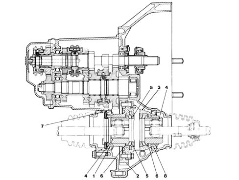
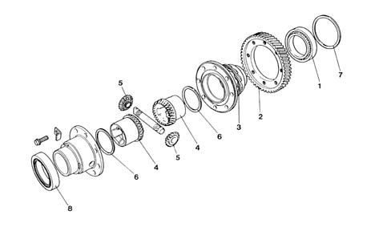
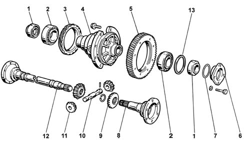

Introduction - MANUAL GEARBOX AND DIFFERENTIAL
- Path
- Descriptions > 21 GEARBOX > 2110 MANUAL GEARBOX AND DIFFERENTIAL > Introduction - MANUAL GEARBOX AND DIFFERENTIAL
- Kind
- system description
- Applies to
- all engines; all production periods
- Interactive page
- https://sloeber94.github.io/elrnDB-fMltpl/en/#/2892437
Applies to: all engines; all production periods
The structure of the gearbox consists of:
- a gearbox casing which contains and supports the main and layshafts, rods and gear selector forks and the gear selector and engagement device.
- a rear cover which contains the 5th speed gears and the rear bearing retaining plate for the main and layshafts
- a bell housing which contains the clutch, the thrust bearing and the control linkage.

1, Conical roller bearing 2, Ring gear 3, Speedometer gear 4, Planet gears 5, Satellite gears 6, Plant gaer adjustment shims 7, Differential housing bearing adjustment shim 8, Conical roller bearing
MAIN SHAFT
The main shaft consists of:
- 1st, 2nd speed and Reverse gears directly on the shaft
- 3rd, 4th and 5th speed gears fitted on the shaft
The main shaft is supported by means of two ball bearings.
LAYSHAFT
The layshaft consists of:
- 1st, 2nd, 3rd, 4th and 5th speed gears directly on the shaft
The main shaft is supported by means of:
- a front conical roller bearing
- a rear ball bearing
GEARS
The gears are the following type:
- helical toothed for the forward speeds
- straight toothed for reverse.
SYNCHRONIZERS
The synchronizers for the forward speeds are the Borg-Warner type.
The arrangement for the synchronizers is the split type because the synchronizers for the 1st and 2nd speeds are fitted on the layshaft, whilst those for the 3rd, 4th and 5th speeds are on the main shaft.
This solution reduces gearbox noise in neutral from the moment 3 of the 5 pairs of gears are not driven.
In addition, the engagement and synchronization loads are reduced as a result of the corresponding reduction in the inert masses rotating downstream of the crankshaft.
Applies to: engines: 1.6 16v; all production periods
DIFFERENTIAL
The differential unit is located in the rear of the gearbox casing.
It consists of:
- a crown wheel and pinion reduction
- two half casings which include the planet and satellite gears.
The differential is supported by two conical roller bearings which should be fitted with a pre-loading.
The planet gears inside the splining in which they slide by means of a three-lobe joint, have two driveshafts which transmit the power to the wheels.
The drive gear for the speedometer is fitted on the outside of the differential housing.

1, Bearing for differential housing 2, Ring gear 3, Speedometer gear 4, Planet gears 5, Satellite gears 6, Planet gear adjustment shims 7, Differential housing bearing adjustment shim 8, Bearing for differential housing
Applies to: engines: 1.9 JTD 8V; all production periods
DIFFERENTIAL
The differential unit is located in the rear of the gearbox casing.
It consists of:
- a crown wheel and pinion reduction
- a differential housing constructed in a single piece which includes the planet and satellite gears.
The differential is supported by two conical roller bearings which should be fitted with a pre-loading.
The planet gears have a splined profile with which the two flanged couplings connected to the two driveshafts which transmit the powr to the wheels.
The drive gear for the speedometer is fitted on the outside of the differential housing.

1, Gasket 2, Bearings for differential housing 3, Gears for speedometer 4, Differential housing 5, Ring gear 6, Flange retaining differential housing to gearbox casing 7, Seal 8, Left driveshaft attachment flange 9, Planet gears 10, Satellite carrier shaft 11, Satellite gears 12, Intermediate shaft 13, Adjustment shim